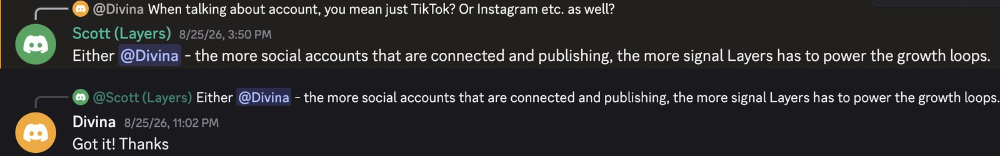
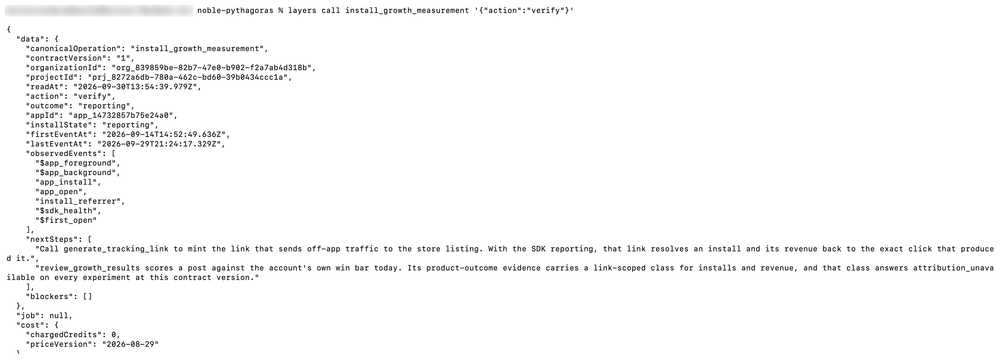
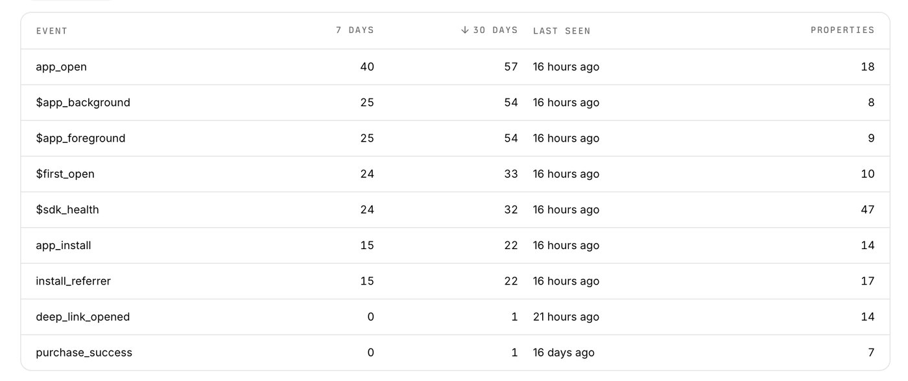
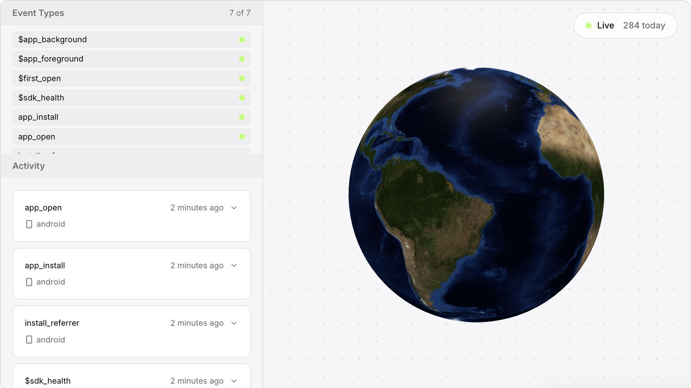
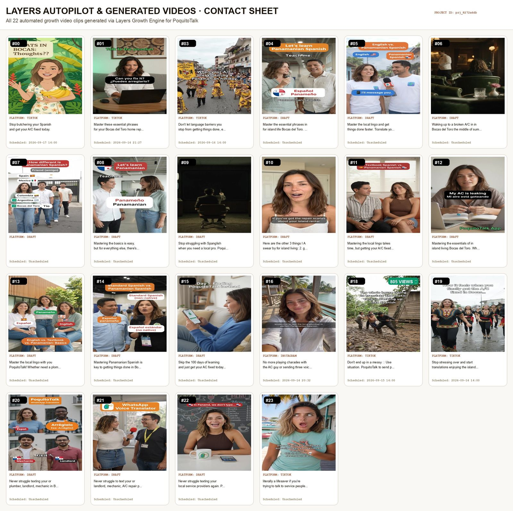

RevenueCat Shipaton 2026 • Growth Loop Award Entry
How Layers Runs Our Growth Loop
PoquitoTalk sends polite island-Spanish voice notes on WhatsApp for people in Bocas del Toro, Panama. This page shows how Layers makes, posts and measures our short videos, what the data showed, including the parts that didn't work, and what we're testing next.
The Layers part of our Shipaton demo, from the brief to the SDK.
Submission write-up
The Write-up, in Full
Our Growth Loop Award entry, in the four parts Layers asked for. The sections further down show the screenshots behind each claim.
Audience and growth hypothesis
PoquitoTalk helps English-speaking expats, off-grid homeowners and travelers in Bocas del Toro, Panama, send polite, natural voice notes to local service providers without struggling through broken Spanish that leaves everyone guessing. They depend on boat captains, plumbers, electricians and solar techs, and a formal translated text often goes unanswered, whether the water pump just died or a tourist needs a boat to Bastimentos today. Growth hypothesis: the island's community chats ask the same questions every day ("Who can recommend an electrician?", "Does the ATM have cash?", "Which captain can take us?"), so practical island tips earn organic reach, and every voice note a user sends shows PoquitoTalk to a local worker and the people around them.
The loop
Message: "When your water pump dies or your boat engine cuts out in Bocas del Toro, finding and texting local trades in formal textbook Spanish gets left on read. PoquitoTalk gives you the verified island directory and generates natural Panamanian WhatsApp audio with zero-install 2-way replies."
Channel or product surface: the Layers autopilot on our TikTok (@dorienvibecodes), a closed loop in three parts:
Auto-generation: Layers creates each clip itself from our brand assets and app screens, modelled on formats that already work: on TikTok, my own best posts (local parade videos); on Instagram, what works for the eight accounts Layers tracks (translator apps Owll and SayHi, Babbel, Duolingo, The Bocas Breeze and three local creators). It works from our App Description, which we rewrote to name a specific person, job and frustration, using Scott's formula; Layers' signal strength for the project is 88%.
Posting cadence: one clip a day at 9:00 since September 14, published with no manual step. Instagram runs the same loop, with each post waiting in the review queue for my approval. Layers can't connect a Facebook page directly, so our Instagram shares each post to the PoquitoTalk Facebook page: both accounts carry the same reels.
Data feedback: views, saves and engagement flow back into Layers, which reviews each post against our own account's median and points to the hooks and formats to double down on. The Layers SDK adds installs and opens from the app, so a post can eventually be tied to an install.
Experiment: Compare the automated daily clips against each other and against our hand-made formats, using TikTok view data. Our first experiment came from a Layers opportunity on September 14: an "expat emergency repair" hook, registered before posting. Later we registered six more posts in Layers as tracked experiments, each testing one variable: hook, format, posting time, or posting frequency.
Intended outcome: Find the hooks and formats that clearly beat our account's median, then feed them back into the daily loop. Once the winners are clear, connect posts to installs with Layers tracking links.
SDK installation and observability
The Layers Growth SDK (@layers/expo v3.3.0) is installed and reporting from the Android app:
First event September 14; latest reading on September 30: still reporting, last event September 29.
What it measures: App lifecycle events (app_open, $app_foreground, $app_background), purchase events via layersService.track('purchase_success'), and a RevenueCat connection via connectRevenueCat.
Honest limits we found and are fixing:
The SDK's optional storage package (@react-native-async-storage/async-storage) was missing, so every app launch counted as a new install. It is now installed and ships in v1.5.11, the next update.
Layers has recorded our first web revenue through Stripe (September 27), but no RevenueCat events yet: Android in-app purchases did not work in the earlier live build. The fix went live in v1.5.10, approved on September 30, so RevenueCat purchase events can now reach Layers.
Layers cannot yet tie an install to a specific post. We have not placed a tracking link yet (TikTok needs 1,000 followers for a clickable bio link; we have 844).
Learning and iteration
What the data showed (TikTok Studio, September 14–27):
The daily autopilot clips settled at a stable baseline of about 210 views per post (most between 130 and 350).
One autopilot clip clearly broke out: "Don't end up in a messy situation 💩" reached 805 views, about 4× our median, but only 2 likes. A humorous, problem-avoidance hook got more views than calm product benefits, but people watched and scrolled on.
Hand-made comedy skits (textbook Spanish vs island Spanish, "embarazada" vs "embarrassed") landed between 177 and 322 views: in line with the baseline, not above it.
A practical tips post ("Cash in Bocas del Toro: 3 things nobody tells you") earned our first save: 225 views, 1 save.
Our TikTok is my existing personal account (@dorienvibecodes). Following Scott's advice on the Discord to connect more accounts, I created dedicated PoquitoTalk accounts on Instagram and Facebook, starting from zero followers. Layers can't connect Facebook directly, so Instagram shares every post to the Facebook page, and both carry exactly the same reels. The brand-new Facebook page turned out to be the bigger audience: 1.5K views and 1.3K viewers from September 1 to 28 (Meta Insights), about 200 people per reel, against 3 to 31 for the same reels on Instagram.
Instagram, honestly, is a mess. I treated the new Instagram account as a place to throw spaghetti at the wall. Layers created three different AI influencer personas for us, and all three ended up posting on the same account, so it never had one recognisable face, voice or style. My TikTok, with one clear style, held up much better. The lesson: one account, one presenter, one family of formats.
Real footage beat the remakes. On my existing TikTok account, Layers modelled its clips on my most successful posts: real videos of local marching parades (where the jingle in our demo comes from). For the new Instagram and Facebook accounts, it drew more on what worked for the accounts it tracks. Honest observation: none of the generated remakes came close to my real parade videos. In a small, close-knit community, real local footage seems to land better than AI-generated video, while AI-made content did better in comedy skits: our best AI-generated post so far is a comedy skit with a "save this" cheat sheet at the end (see below).
On September 25 we posted nine clips in one day, and the later posts got only 6 and 7 views. We first blamed posting too often, but Layers' posting research (12.68M videos from 189,718 creators) shows the opposite: three posts a day bring about 3.3× the total daily reach of one. A better clue came on September 29: a video I had uploaded by hand from my desktop stalled at 0 views twice, then got views within minutes when re-uploaded from the TikTok phone app. The posts Layers publishes automatically never stalled. My guess is the desktop upload, possibly while I was connected to my work VPN, which can make TikTok place the post in the wrong country. The upload conditions, not the number of posts, are now our main suspect. That re-uploaded video (the bar skit, re-cut with a "Panama bar cheat sheet" ending to earn saves) now has 332 views, 7 likes, 1 comment and 1 save (2.7% engagement). Not spectacular in views, but it is the best-performing AI-generated video we have posted so far, in any genre: parade remakes, comedy skits with or without a cheat sheet, and practical tips. Compared with the 805-view breakout, it has less than half the views but 3.5 times the likes, plus a save: views and engagement tell different stories, and a useful ending (the cheat sheet) seems to turn a laugh into a like or a save.
A handmade challenger, next to the loop. The bar skit wasn't made by the autopilot: I made it myself, as a challenger running alongside the Layers loop, not a replacement for it. Its numbers flow back into Layers like every other post, so Layers can learn from it and carry what works into the clips it generates next. The first signals are small but promising (7 likes, a comment and a save on 332 views), so we'll keep testing this format: a short skit that ends with a practical cheat sheet people want to save.
What Layers could confirm: Layers has returned two verdicts so far, and both are inconclusive: the September 14 "expat emergency repair" hook, and the humorous "messy situation" hook behind our 805-view breakout. On the 805-view test, Layers put it this way: "This imported post is a retrospective observation and cannot establish a causal winner." In other words, one post that took off, registered after the fact, doesn't prove the hook caused it, and Layers doesn't pretend otherwise. The other five experiments were registered after their posts went live, so Layers treats them as retrospective observations; they were still awaiting results at submission time, so the numbers above come from TikTok Studio.
Why we held back on paid ads: As Scott (Layers) put it, "paid amplifies whichever part is already working." We had one breakout post, not a repeatable winner, so we kept paid media off and focused on the organic loop.
What we learned: Scott shared on the Shipaton Discord that what you post explains five times more than when you post, and that 1 in 100 posts earns half of an account's total views. Layers' posting research (TikTok posting rules, 12.68M videos from 189,718 creators) puts it plainly: "When you post is noise. What you post is signal." Our small sample points the same way: the hook mattered far more than the format or the posting time. It is a small proof, not a conclusion, but it gives us a clear direction to iterate on.
What we'd try next (the next 4 weeks, as a solo founder):
Real footage vs. remakes, head to head. Film real island moments myself (the docks, a water taxi ride, the next parade) and put a POV caption on them. Post 3 of those and 3 Layers-generated clips in the same weeks, and compare views and saves.
Retest the humor hook properly. The "messy situation" hook got 805 views once, but Layers rightly called it inconclusive. Run that style 3 more times, registered in Layers before posting, to see if it holds up.
Register every test before it goes live, so Layers can give a real verdict instead of a retrospective one.
Keep the daily autopilot, add my own posts on top: about 2 posts a day in total, manual uploads from the phone app and never over a VPN.
End every tips video with a "save this" card and track saves, since saves are the strongest signal in Layers' research and our cash tips post earned the first one.
Connect posts to installs: add a Layers tracking link to our website and X profile now, and to the TikTok bio once we pass 1,000 followers.
No paid ads yet. Only when one format beats our median several times in a row, and the SDK shows installs following it.
Clean up Instagram. Archive the off-brand posts (reversible, and the handle and the Facebook link stay), keep one presenter, and restart the loop there with the formats that worked on TikTok.
Audience
Who It's For, and Why Short Video
PoquitoTalk helps English-speaking expats, off-grid homeowners and travelers in Bocas del Toro send polite, natural voice notes to local service providers. They depend on boat captains, plumbers, electricians and solar techs, and a formal translated text often goes unanswered.
Growth hypothesis: the island's community chats ask the same questions every day ("Who can recommend an electrician?", "Does the ATM have cash?", "Which captain can take us?"), so practical island tips earn organic reach, and every voice note a user sends shows PoquitoTalk to a local worker and the people around them.
The loop
One Closed Loop, Three Parts
The Layers autopilot runs on our TikTok (@dorienvibecodes), with Instagram and Facebook alongside.
1
Auto-generation
Layers creates each clip itself from our brand assets and app screens, modelled on formats that already work: on TikTok, my own best posts; on Instagram, what works for eight accounts Layers tracks (Owll, SayHi, Babbel, Duolingo, The Bocas Breeze and three local creators). We rewrote our App Description to name a specific person, job and frustration, and Layers' signal strength rose to 88%.
2
Posting cadence
One clip a day at 9:00 since September 14, published with no manual step. Instagram runs the same loop, with each post waiting for my approval. Layers can't connect a Facebook page directly, so Instagram shares each post to our Facebook page.
3
Data feedback
Views, saves and engagement flow back into Layers, which reviews each post against our own account's median and points to the hooks and formats to double down on. The Layers SDK adds installs and opens from the app, so a post can eventually be tied to an install.
Experiment
Compare the automated daily clips against each other and against our handmade formats. Our first experiment came from a Layers opportunity on September 14, an "expat emergency repair" hook, registered before posting. Six more posts were later registered as tracked experiments, each testing one variable: hook, format, time or frequency.
Intended outcome
Find the hooks and formats that clearly beat our median, feed them back into the daily loop, and once the winners are clear, connect posts to installs with Layers tracking links.

Shipaton Discord, Aug 25: Scott (Layers) on connecting more accounts. That's why we added Instagram and Facebook next to my TikTok.
SDK
Installed, Verified, Reporting
The Layers Growth SDK (@layers/expo v3.3.0) runs in the Android app. layers call install_growth_measurement '{"action":"verify"}' returns reporting with 0 blockers. Video: 1:35.

The real verify output: outcome and install state "reporting", no blockers, with app_install, app_open, install_referrer, $first_open and lifecycle events observed.

Events table. Honest limits: a missing storage package made each launch count as a new install (fixed in v1.5.11), and posts aren't tied to installs yet because we haven't placed a tracking link (TikTok needs 1,000 followers for a clickable bio link).

Live events in the Layers dashboard (September 27).
The data
What the Numbers Showed
TikTok Studio and Meta Insights, September 14 to 29. The daily autopilot clips settled at a stable baseline of about 210 views per post.
I made this one myself, next to the loop, not instead of it. 332 views, 7 likes, a comment and a save: less than half the views of the breakout, but 3.5× the likes. Its data flows back into Layers like every other post.
PROMISING
Our read, not a Layers verdict: a useful ending turns a laugh into a save.
1.5K views and 1.3K viewers in September, from zero followers: about 200 people per reel, against 3 to 31 for the same reels on Instagram.
Same reels, very different audiences.

Clips Layers generated for us. Honest observation: none of the AI remakes came close to my real parade videos. In a small, close-knit community, real local footage lands better; AI-made content did better in comedy skits.
Honest log
What Didn't Work
Shared as it happened.
Sep 25
Nine posts in one day
The later posts got 6 and 7 views. Layers' research says more posts bring more reach, so frequency wasn't the cause. A hand-uploaded video stalled at 0 views twice and worked within minutes from the phone app. The posts Layers publishes never stalled.
Main suspect: desktop uploads, possibly over my work VPN, not the number of posts.
September
Instagram, honestly, is a mess
I threw spaghetti at the wall. Layers created three different AI influencer personas, and all three posted on the same account, so it never had one recognisable face, voice or style. My TikTok, with one clear style, held up much better.
One account, one presenter, one family of formats.
What we learned
What You Post Beats When You Post
"When you post is noise. What you post is signal."Layers posting research, 12.68M videos from 189,718 creators. Scott shared on the Shipaton Discord that what you post explains five times more than when you post, and that 1 in 100 posts earns half of an account's views.
Our small sample points the same way: the hook mattered far more than the format or the posting time. We kept paid ads off, because, as Scott put it, "paid amplifies whichever part is already working", and we don't have a repeatable winner yet.
Next 4 weeks
What We're Testing Next
Real footage vs. remakes, head to head. Three real island clips with a POV caption against three Layers clips in the same weeks; compare views and saves.
Retest the humor hook properly, three more times, registered in Layers before posting.
Register every test before it goes live, so Layers can give a real verdict instead of a retrospective one.
Keep the daily autopilot, add my own posts on top: about two a day, uploaded from the phone app, never over a VPN.
End every tips video with a "save this" card and track saves.
Connect posts to installs: Layers tracking links on the website and X now, TikTok at 1,000 followers.
No paid ads yet, until one format beats our median several times in a row and the SDK shows installs following it.
Clean up Instagram: archive the off-brand posts, keep one presenter, restart the loop with what worked on TikTok.